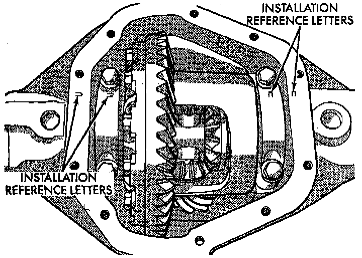
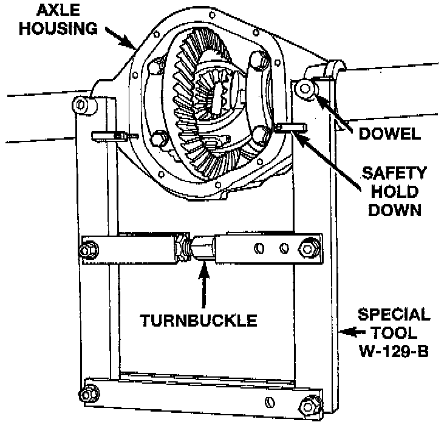
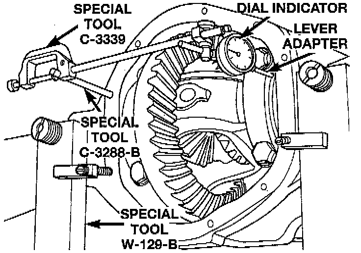
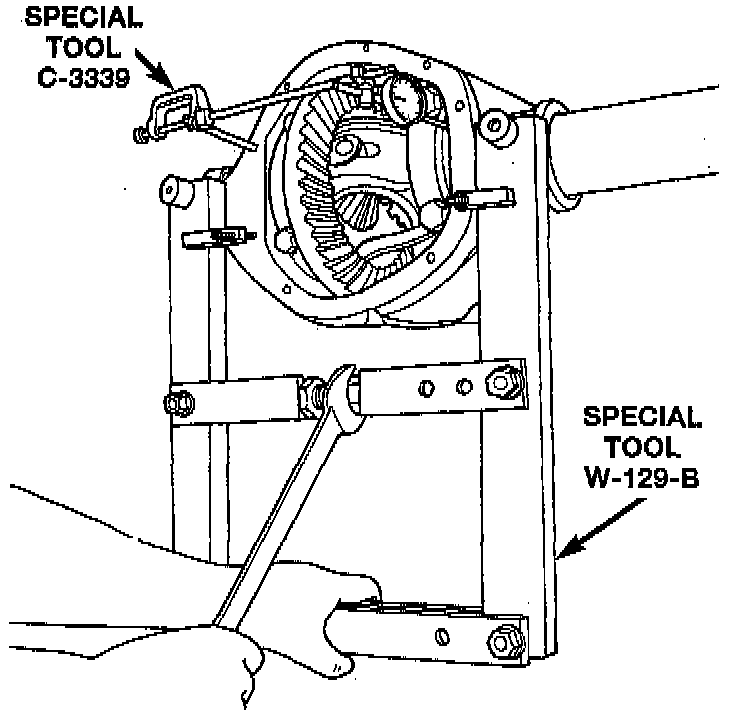
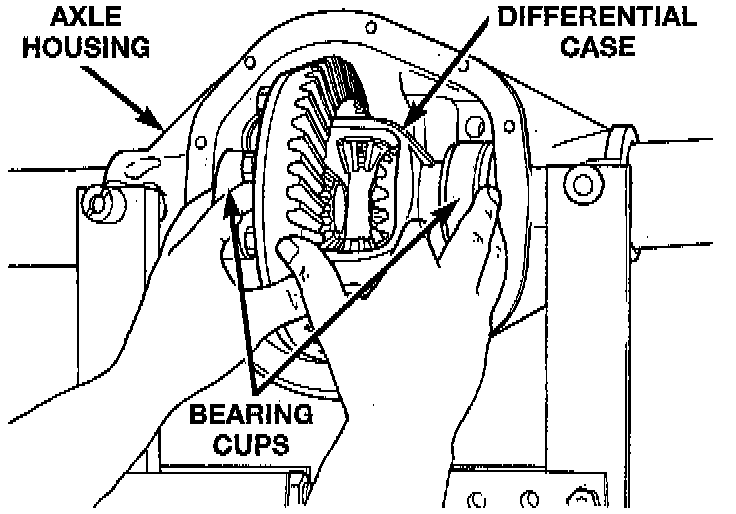
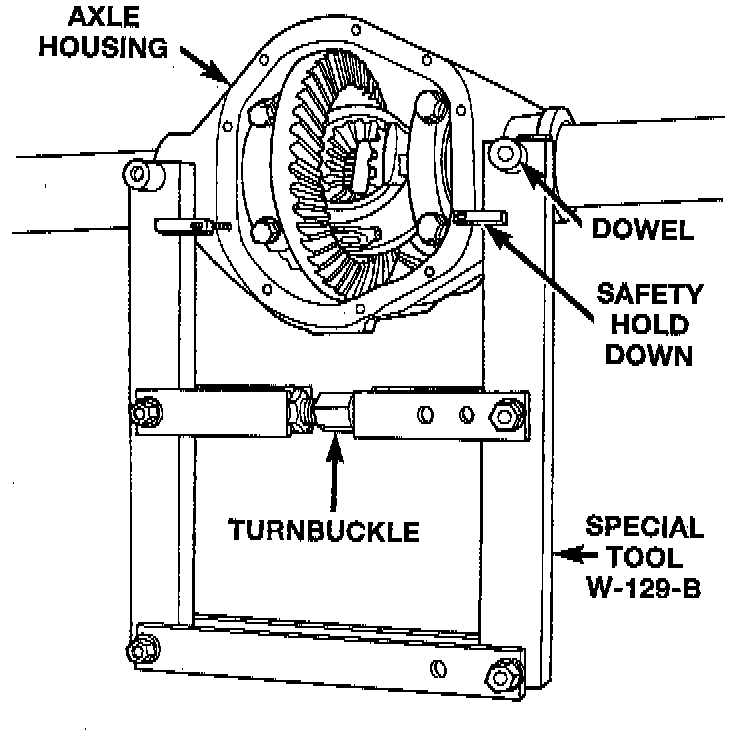
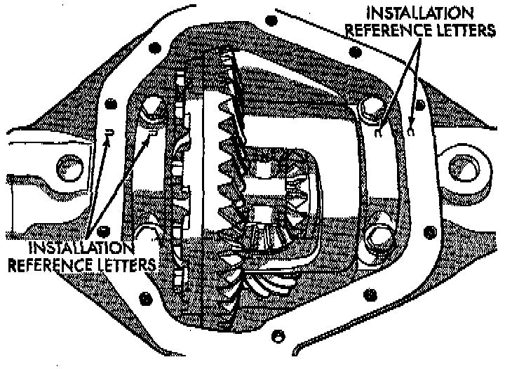

Removal and Installation
REMOVAL1. Raise and support vehicle.
2. Remove the lubricant fill hole plug from the differential housing cover.
3. Remove the differential housing cover and allow fluid to drain.
4. Remove hub bearings and axle shafts.

5. Note the installation reference letters stamped on the bearing caps and housing machined sealing surface.
6. Loosen the differential bearing cap bolts.

7. Position Spreader W-129-B, utilizing some items from Adapter Kit 6987, or equivalents with the tool dowel pins seated in the locating holes. Install the holddown clamps and tighten the tool turnbuckle finger-tight.

8. Install a Guide Pin C-3288-B, or equivalent at the left side of the differential housing. Attach Dial Indicator C-3339, or equivalent to guide pin. Load the lever adapter against the opposite side of the housing and zero the indicator.
CAUTION: Do not spread over 0.50 mm (0.020 inch). If the housing is over-spread, it could be distorted or damaged.

9. Spread the housing enough to remove the differential case from the housing. Measure the distance with the dial indicator.
10. Remove the dial indicator.
11. While holding the differential case in position, remove the differential bearing cap bolts and caps.

12. Remove the differential from the housing. Ensure that the differential bearing cups remain in position on the differential bearings.
13. Mark or tag the differential bearing cups to indicate which side of the differential they were removed from.
14. Remove spreader from housing.
NOTE: If replacement differential bearings or differential case are being installed, differential side bearing shim requirements may change. Refer to the Differential Bearing Preload and Gear Backlash procedures to determine the proper shim selection.

INSTALLATION
1. Position Spreader W-129-B, utilizing some items from Adapter Kit 6987, or equivalents, with the tool dowel pins seated in the locating holes. Install the holddown clamps and tighten the tool turnbuckle finger-tight.
2. Install a Guide Pin C-3288-B, or equivalent at the left side of the differential housing. Attach Dial Indicator C-3339, or equivalent to guide pin. Load the lever adapter against the opposite side of the housing and zero the indicator.
CAUTION: Do not spread over 0.50 mm (0.020 inch). If the housing is over-spread, it could be distorted or damaged.
3. Spread the housing enough to install the case in the housing. Measure the distance with the dial indicator.
4. Remove the dial indicator.
5. Install differential case in the housing. Ensure that the differential bearing cups remain in position on the differential bearings. Tap the differential case to ensure the bearings cups are fully seated in the housing.

6. Install the bearing caps at their original locations.
7. Loosely install differential bearing cap bolts.
8. Remove axle housing spreader.
9. Tighten the bearing cap bolts to 61 Nm (45 ft. lbs.) torque.
10. Install the hub bearings and axle shafts.